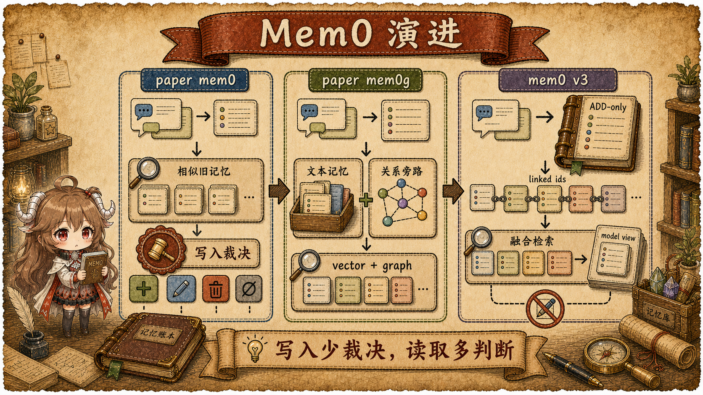
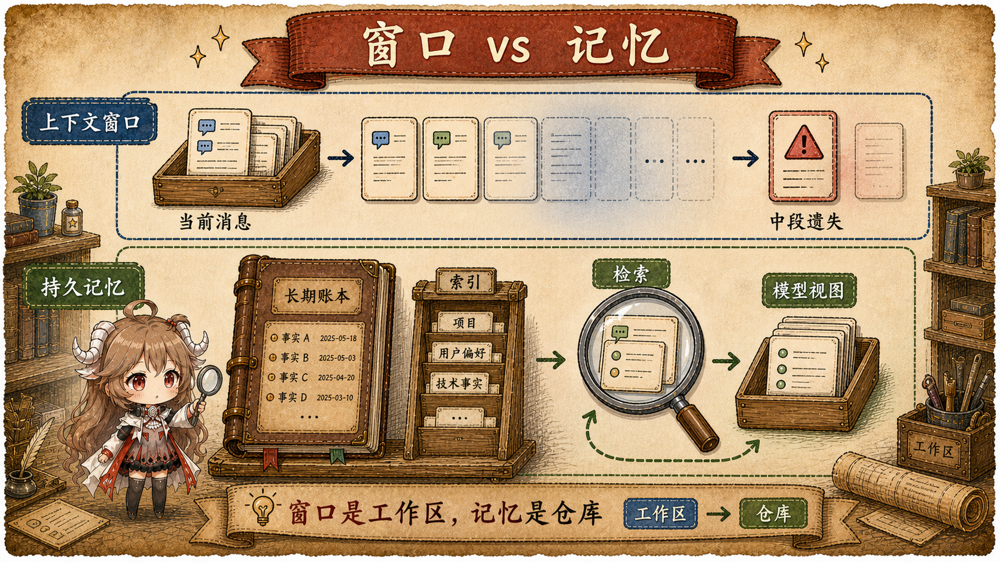
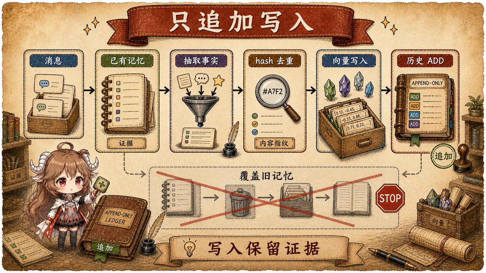
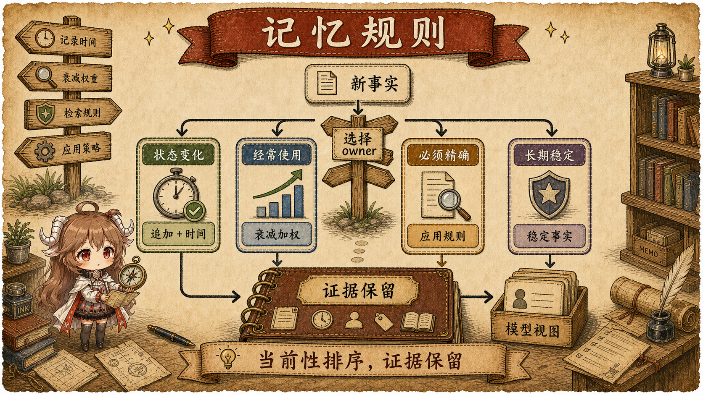

先看一个很普通的长期记忆场景。用户一月说自己喜欢素食餐厅，三月说最近开始吃海鲜，六月又问“我以前约朋友吃饭一般选什么地方？”。 如果系统只保留最后一条偏好，就会丢掉一月的历史；如果系统把所有事实都无差别塞进上下文，又会让模型把过时偏好当成现在偏好。 这个场景把长期记忆拆成两个问题：历史应该怎样保存，现在是否仍然适用又该在哪一层判断。
在工程形态上，Mem0 位于应用和模型之间：应用把对话、用户维度和 agent 维度交给它， 它把可长期使用的信息抽成 memory records；模型需要回答时，应用再从 Mem0 搜出少量相关记忆放回上下文。 这个位置解释了它为什么容易成为 agent 记忆讨论里的核心组件：它不要求把所有历史塞进 prompt，也不要求每个应用自己重写一套记忆抽取、去重和检索逻辑。
Mem0 官方博客从几个角度反复强调同一件事： context window 更像 RAM，不是长期存储； 更大的上下文窗口也不能替代持久记忆； 把记忆写成一个文件又会把证据、偏好、临时状态和检索策略糊在一起。 这些文章共同指向一个工程判断：memory layer 的价值不只是“多记一些”，而是把保存、检索、时间解释和排名策略分给不同层。 v3、Temporal Reasoning 和 Memory Decay 就是在这条线上继续展开。
证据边界。 本文把事实分成四层：Mem0 原始论文说明 paper mem0 与 mem0g 的算法设计； Mem0 官方博客和文档说明 Platform v3 的公开合约； mem0ai/mem0 公开源码说明 OSS 与 Python SDK 可见的调用路径； Platform 服务端内部实现不可见，因此 Temporal Reasoning 和 Memory Decay 的排序细节只按官方合约描述，不写成源码事实。
读这篇文章可以带着五个问题：
- 口头说的 v1、v2、v3，和论文里的 mem0、mem0g 是不是一回事？
- paper mem0 为什么要让 LLM 判断 ADD、UPDATE、DELETE、NOOP？
- mem0g 为什么把实体和关系放进图数据库，又带来了什么成本？
- v3 为什么改成 ADD-only、实体索引和 hybrid retrieval？
- Temporal Reasoning 与 Memory Decay 分别把“时间”和“近期使用”放到了哪一层？
一、先看三代算法怎么一路改过来
讲 Mem0 演进时，最容易混在一起的是两条命名线：论文里讨论的是 mem0 和 mem0g， 产品与 SDK 迁移材料里讨论的是 v2 API 和 v3 行为。本文不把它们硬套成“官方 v1、v2、v3”， 而是按算法取舍来读：先用 LLM 维护一组较小的文本记忆，再用图结构表达实体关系，最后把写入变简单， 把更多判断交给检索和排序。这样后面谈 ADD-only、Temporal 和 Decay 时，读者能看到它们各自接住了前一代留下的哪部分压力。
| 称呼 | 更准确的读法 | 不要误读成 |
|---|---|---|
| paper mem0 | 论文里的基础算法：抽取新 memory，再对相似旧 memory 判定 ADD/UPDATE/DELETE/NOOP。 | 官方产品里的“v1”。公开材料没有这样命名。 |
| paper mem0g | 论文里的图增强算法：显式抽 entity 和 relationship，并使用图数据库。 | 官方产品里的“v2”。它更像 mem0 旁边的一条 graph 变体。 |
| v2 API / SDK | 迁移材料里说的旧版本面：add 可能返回 ADD/UPDATE/DELETE，且有 enable_graph、graph_store 等图记忆配置。 |
单指 mem0g。v2 是产品/API/SDK 行为集合，不是论文算法名。 |
| mem0 v3 | 2026 年 4 月后的新算法面：single-pass ADD-only、内置 entity linking、hybrid retrieval、Temporal Reasoning 和 Memory Decay。 | 只是把 mem0g 改名。v3 同时改了写入、图关系承担方式和检索排序。 |

1.1 paper mem0：先抽取，再决定怎么改旧记忆
最早的 mem0 先面对一个很实际的目标：memory set 不能无限膨胀，否则每次检索和注入上下文都会变贵； 重复事实应该合并，明显错误或过时的信息也应该移出当前记忆。原始论文 于是把“整理旧记忆”放进写入路径。它看到的也不是单条用户消息，而是一小段对话状态： 最新 user/assistant message、之前的 summary、最近若干条消息，以及已有 memory。流程可以简化成这样：
输入：
最新 user message + assistant message
之前的 summary
最近 m 条消息
已有 memory store
写入：
1. LLM 从新对话里抽取 k 条 candidate memory
2. 对每条 candidate，用 embedding / vector similarity 在已有 memory 里召回相似的 m 条
3. LLM 比较 candidate 和相似旧记忆
4. 输出 ADD / UPDATE / DELETE / NOOP
5. 按输出修改 memory store
读取：
query -> vector similarity -> top memories -> 放回本轮上下文
这里的“相似”要分两层看。第一层是召回：candidate 会被转成 embedding，再和已有 memory 的向量做相似度搜索，
找出最值得比较的旧记录。第二层才是裁决：相似旧记录只是被拿给 LLM 看的候选项，并不表示分数高就一定
UPDATE。可见 OSS 代码里的
DEFAULT_UPDATE_MEMORY_PROMPT
也把这一步写成“比较新事实和已有 memory，然后选择 ADD、UPDATE、DELETE 或 NONE”。这里的 NONE
可以理解成论文和本文里的 NOOP：不修改。
| 新事实和旧 memory 的关系 | 应该怎么处理 | 直觉例子 |
|---|---|---|
| 旧 memory 里没有这个事实 | ADD |
旧：用户是工程师；新：用户叫 John。 |
| 同一事实，只是换了说法 | NOOP / NONE |
旧：喜欢 cheese pizza；新：loves cheese pizza。 |
| 同一对象或偏好，但新信息更具体，或者值已经改变 | UPDATE |
旧：喜欢打 cricket；新：喜欢和朋友一起打 cricket。 |
| 新事实否定旧事实，或者明确要求删除 | DELETE |
旧：喜欢 cheese pizza；新：不喜欢 cheese pizza。 |
这套做法的优点是 memory set 比较紧凑：相关事实可以合并，明显过时或错误的内容也能删掉。
但它不是严格去重算法：如果 embedding 没召回正确的旧 memory，或者 LLM 把“同义重复”误判成新事实，
系统仍然可能重复 ADD。缺点也来自同一个地方：写入阶段要让 LLM 做一次“新旧记忆裁决”，
而 UPDATE 和 DELETE 会削弱历史证据。用户后来问“去年我为什么改变偏好”时，被改写或删除的版本未必还在。
这就引出后面的核心问题：长期记忆到底应该在写入时整理成一个最新状态，还是先把历史留下来？
1.2 paper mem0g：把“关系”从文本记忆里拆出来
paper mem0 已经能维护一组相对紧凑的文本记忆，但它主要依赖向量相似度。这个办法适合找“意思接近”的事实， 对关系型问题就不够直接：用户、公司、项目、同事可能分别出现在不同 memory 里，语义相似度能找回相关文本， 却不会天然知道这些对象之间是上下级、协作、归属还是依赖关系。mem0g 的改动，是在文本 memory 旁边再放一条结构化路径： memory records 仍然写入向量存储，entity 和 relationship 另外进入 graph store。 换句话说，图是实体/关系索引旁路，不是文本 memory 的替代品。
输入：
对话消息
已有 memory store
graph store
写入：
1. 从消息中抽取 memory facts
2. 同时抽取 entities 和 relationships
3. memory facts 写入 vector memory store
4. entities / relationships 写入 graph store
5. 对同名 entity 做合并，对重复或变化的 relationship 做维护
读取：
1. query 先通过语义检索召回 memory records
2. 从 query 或已召回 memory 中识别 entity
3. 沿 graph store 找邻居 entity、relationship 和相关 memory
4. 合并 vector memories 与 graph facts，组成本轮上下文
举个例子，用户先说“我在 Acme 做 Hermes 项目”，后来又说“Alice 也在跟 Hermes 的接口”。
纯文本记忆会留下两三条事实；graph 路线则能显式得到 用户 - works_on - Hermes、
Alice - collaborates_on - Hermes、Hermes - belongs_to - Acme 这样的结构。
当用户问“跟 Alice 讨论 Hermes 时要注意什么”时，系统不只是在文本里找相似句子，还可以顺着 Hermes 这个节点把同事、
公司和项目关系一起带回来。
| mem0g 新增的东西 | 解决什么问题 | 带来的成本 |
|---|---|---|
| entity | 给人、组织、项目、地点等对象一个稳定锚点。 | 需要做实体识别、别名合并和跨轮对齐。 |
| relationship | 把“谁和谁有什么关系”从文本里显式抽出来。 | 关系可能变化，也可能和旧边冲突，需要维护策略。 |
| graph store | 支持按实体邻接关系、多跳路径和结构化上下文补充检索。 | 引入额外存储、查询路径和结果合并逻辑。 |
| vector + graph 合并 | 让“语义相关”和“关系相连”同时参与上下文选择。 | 需要处理两种结果的去重、排序和冲突。 |
所以，mem0g 的重点不是把文本记忆替换成图，而是让关系型信息有自己的索引方式。 这一步解决了“相关对象怎么串起来”的问题，却没有解决“历史版本该不该被覆盖”的问题。 图可以告诉系统 Alice、Hermes 和 Acme 之间有关联，但当用户后来换了项目，或者同一关系在不同时间发生变化时， 系统仍然要决定旧事实是更新、删除，还是作为历史保留。这个压力会继续落到下一步。
1.3 mem0 v3：把写入做薄，把判断推到读取
前两条路线叠在一起以后，写入路径会变得很重：paper mem0 要在写入时判断 ADD、UPDATE、DELETE、NOOP； mem0g 还要维护实体、关系和图存储。更麻烦的是，长期记忆里的很多变化不是简单的“旧的错了，新的对了”。 用户一月喜欢杏仁奶，四月因为过敏改喝燕麦奶；问“现在买什么”应该偏向四月事实，问“为什么换口味”又需要一月事实。 如果写入时直接覆盖，当前状态会更干净，但历史解释会变弱。
v2 到 v3 迁移文档 和 Token-Efficient Memory Algorithm 文章 里说的 single-pass ADD-only，可以按这个思路理解：写入阶段不再承担“旧事实还算不算数”的最终裁决， 它只负责把新的记忆证据写成可检索记录，并把它和相关旧记忆、实体索引连接起来。当前问题应该看哪几条， 交给 retrieval、Temporal Reasoning 和 Memory Decay 等读取阶段信号共同决定。
输入：
对话消息
existing memories
可选 timestamp
写入：
1. 单次 LLM 调用抽取新 memory
2. 不在这一步对旧 memory 做 UPDATE / DELETE
3. 用 hash / batch embedding 做基础去重与向量化
4. 新 memory 作为 ADD 事件写入 vector store
5. 用 linked_memory_ids 连接相关旧 memory
6. 做内置 entity linking，给检索提供实体信号
读取：
query -> semantic candidates
-> BM25 keyword signal
-> entity boost
-> time / decay signals
-> ranked model view| v3 机制 | 接住前面什么问题 | 新的约束 |
|---|---|---|
| single-pass extraction | 减少写入阶段多轮 LLM 裁决带来的成本和延迟。 | 抽取质量更依赖一次调用的提示词和输入上下文。 |
| ADD-only | 避免把时间变化误写成不可逆覆盖或删除。 | 重复、冲突和过时事实要在检索层处理。 |
linked_memory_ids |
让新旧事实有连接，而不是靠覆盖表达“变化”。 | 检索和展示时要理解这些连接的含义。 |
| 内置 entity linking | 保留 mem0g 的关系线索，但不要求用户维护外部 graph store。 | 实体信号成为检索排序的一部分，不再是单独图查询的全部答案。 |
| hybrid retrieval | 把语义、关键词、实体、时间和使用历史放到同一个排序问题里。 | model view 的质量取决于多信号融合，而不只取决于写入是否“干净”。 |
这样看，ADD-only 的优势不只是省 token。它让写入阶段少做不可逆判断，降低误删、误覆盖带来的历史损失； 同时通过链接、实体和多信号检索，把“哪条记忆现在更有用”变成读取阶段的问题。 它也有代价：旧事实仍在库里，存储会继续增长，检索层要承担去重、冲突排序和过时事实过滤； 如果排序信号处理不好，旧事实仍可能被误带回 model view。后面的 Temporal Reasoning 和 Memory Decay， 正是继续回答“同一批历史记录，在不同时间问题和近期使用信号下该怎么排”。
1.4 先把三层对象分清：窗口、记录和模型视图
读到 ADD-only 时，容易冒出一个误解：既然历史都留下来，是不是所有旧事实都会进入上下文？ 答案要从三层对象看。context window 是本轮模型能看到的工作区；memory record 是持久化后可检索的事实； model view 是检索之后放回本轮上下文的少量结果。ADD-only 改的是 memory record 的写入方式； Temporal 和 Decay 改的是 model view 的选择方式。两者都不等于把全部历史塞进 context window。

| 术语 | 本文含义 | 常见误读 |
|---|---|---|
| context window | 本次请求发给模型的工作区，适合短期推理和工具结果。 | 把窗口变大当成长期记忆，忽略成本、遗忘和 lost-in-the-middle。 |
| memory record | 从对话中抽出的持久事实，带 payload、metadata、embedding 和历史记录。 | 把它当成“当前真相”，忽略它也可能是过去某一刻的真相。 |
| model view | 检索、过滤、排序后被展示给模型的少量记忆。 | 把它等同于全部历史，导致没召回的事实被误判为不存在。 |
| ranking layer | 把语义、关键词、实体、时间和访问历史转成当前结果顺序的层。 | 把排名结果当成写入覆盖的结果。 |
后续博客共同讨论的是 model view 质量
Mem0 的 BEAM benchmark 文章 和 memory simulation guide 都在强调生产记忆评测不能只看“有没有召回”。更关键的是过时事实、矛盾事实、时间条件和检索漂移。 Temporal Reasoning 和 Memory Decay 正是在这个问题空间里出现的：它们让系统在保留历史的同时，更清楚地回答“现在、当时、最近常用”。
二、写入为什么只 ADD：先留下证据，不急着改判旧事实
先把写入想成一位档案员。用户今天说“我开始吃海鲜了”，档案员最危险的动作不是少写一条， 而是立刻把“一直偏好素食餐厅”改掉。因为六月用户可能问“以前我和朋友吃饭一般选哪里”， 这时旧事实不是垃圾，而是历史证据。v3 的取舍就是把档案员的权限收窄：先把新证据写进去， 不在写入时急着判定旧证据该覆盖、删除，还是永远失效。
Mem0 的 Token-Efficient Memory Algorithm
文章给出 single-pass ADD-only 的方向。公开 OSS 路径也能看到同样的形状，不过可以按“证据进入仓库”的顺序来读：
Memory.add()
先处理输入、过滤器和 metadata，再进入
_add_to_vector_store()。
在这条可见路径里，LLM 提取新 memory；运行时再做 batch embedding、hash 去重、vector insert、history ADD 和 entity linking。
重点不在某个函数名，而在职责变化：写入路径负责“把新证据放好”，不负责“把旧历史判没”。

| 旧路线的压力 | ADD-only 的处理 | 得到的优势 |
|---|---|---|
写入时误判 UPDATE / DELETE |
新事实作为新记录进入 memory store。 | 减少不可逆覆盖，保留之后解释历史的证据。 |
| 同一偏好在不同时间有不同答案 | 变化本身成为记忆，并可带时间信号。 | “现在是什么”和“当时是什么”不再抢同一条记录。 |
| 图关系带来额外存储和维护成本 | 用 linked_memory_ids 和内置 entity linking 保留关联。 |
仍能表达相关性，但不要求 OSS 用户维护外部 graph store。 |
| 写入链路越长，成本和延迟越难控 | 单次抽取、batch embedding、hash 去重后写入。 | 写入路径更短，失败面更小，后续判断集中到检索层。 |
2.1 LLM 只做抽取和连接，不做最终状态裁判
这里容易误会：ADD-only 不是说 LLM 退出写入链路。它还在，只是角色变了。
旧路线让它像裁判，决定旧 memory 该 UPDATE 还是 DELETE；
v3 更像让它做证据整理：这句话值不值得长期保存、它和哪条旧记忆有关、里面的“上周”“昨天”该落到哪一天。
ADDITIVE_EXTRACTION_PROMPT
正是在约束这些职责：用户和 assistant 消息都可能包含信息；相对时间要用 observation date 落到具体日期；
与旧记忆相关时使用 linked_memory_ids，而不是直接改写旧记录。
新消息：
"我现在改喝 oat milk 了，之前 almond milk 有点过敏。"
写入时更像这样判断：
1. 这是一条新的长期事实吗？是。
2. 它是否和旧偏好有关？是，链接旧 memory。
3. 它是否应该覆盖旧 memory？不在写入阶段决定。{
"memory": [
{
"id": "0",
"text": "User switched from almond milk to oat milk lattes after developing an almond sensitivity",
"linked_memory_ids": ["existing-memory-id"]
}
]
}这个 JSON 的关键不是字段多漂亮，而是“变化本身”成为一条新的、可追溯的事实。 旧偏好没有被静默删除；后续检索可以同时看到“曾经喜欢什么”和“后来为什么变了”。 长期 agent 需要的正是这种可回放的历史，而不是每次只剩一个最新结论。
2.2 OSS 对 Platform-only 时间参数保持硬边界
讲到 observation date，很容易顺手把 Temporal Reasoning 也算进 OSS。这里要停一下。
公开 OSS 能看到的是 ADD-only 写入、基础检索和参数边界；Platform v3 合约才暴露完整的时间推理参数。
公开源码里，
Memory.add(timestamp=...) 在 OSS 路径会直接抛出 Platform-only 错误；
Memory.search(reference_date=...) 也一样。
这不是“代码没翻到”，而是 API 层明确把 Temporal Reasoning 切到 Platform v3。
所以后面谈 Temporal，只能说官方合约允许写入时间和查询观察时间分开；
至于服务端怎么把时间信号并入 ranking，公开源码没有给出实现细节。
三、读取为什么要混合排序：候选多了，就要先筛再排
ADD-only 把历史留下来了，读取阶段就不能偷懒。一次普通的 vector top-k 只能回答“哪些句子和 query 像”， 但读者真正关心的是“哪些记忆该给模型看”。这两个问题差别很大： 旧偏好和新偏好都可能和 query 相似，常提到的同事名也可能把无关项目带出来。 v3 路线把写入阶段拿掉的选择，放到了 model view 形成阶段，也就是先扩大候选，再用多种信号筛选和排序。
Mem0 OSS 的搜索路径从
Memory.search()
进入 _search_vector_store()：
先做 query lemmatization 和实体抽取，再做 embedding；语义召回会 over-fetch，关键词搜索会生成 BM25 分数，
实体 store 会给相关 memory 加 boost。
最后这些信号进入
score_and_rank()。
可以把这条链路理解成三句话：语义负责“别跑题”，关键词负责“别漏掉精确词”，实体负责“别漏掉相关对象”。

3.1 先用语义守门，再融合关键词和实体
排名最怕“熟人误伤”。比如 Alice 是用户经常提到的人，query 里也出现了 Alice， 但这次问的是餐厅偏好，不是 Hermes 项目。如果只看实体，很多 Alice 相关记忆都会显得“重要”。 所以融合排序的第一步不是加分，而是守门：semantic score 低于 threshold 的候选先出局， 后面才轮到 normalized BM25 和 entity boost。关键词或实体信号可以改变相关候选之间的顺序， 但不应该把一个语义不相关的候选硬送进 model view。
semantic candidates
-> threshold gate
-> add normalized BM25 when available
-> add entity boost when available
-> normalize by active signal budget
-> return top_k3.2 当前是否适用，需要时间和访问信号
过了语义门槛，也只是说明“相关”，还没有说明“当前该用”。同一个用户先喜欢 A，后来改成 B； 两条 memory 都应该保留，因为一条回答“当时是什么”，另一条回答“现在可能是什么”。 这时读取层还需要两类额外信号：Temporal Reasoning 处理“站在哪个时间点看”，Memory Decay 处理“最近哪类信息被反复用到”。 它们不取代语义相关性，而是在相关候选里面继续判断当前问题更需要谁。
四、Temporal Reasoning：让问题站到某一天
“我现在喝燕麦奶”和“我二月喜欢什么”都可能围绕同一个偏好，但答案不该一样。
Temporal Reasoning 的作用，就是让 query 带着一个观察点进入历史，而不是让系统永远默认“最新事实最大”。
它不把旧记录改成新记录，而是让写入记录“何时观察到这个事实”，让搜索表达“以哪一天为观察点”。
Temporal Reasoning 官方文章
和 文档 给出的公开合约包括：Platform v3 支持，默认启用；
写入可以带 timestamp；搜索可以带 reference_date；返回 shape 仍是普通 search 结果。

4.1 请求形态：写入时间和观察时间分开
回到前面的餐厅例子：三月开始吃海鲜，是事实被观察到的时间；六月追问“一月通常去哪”，
是本次问题希望站到的时间。它们看起来都叫“时间”，但属于两件事。
如果这两个时间混在一起，系统只能猜“最新事实”是否应该覆盖旧事实。Platform 请求把它们拆开：
timestamp 描述记忆进入历史的时间，reference_date 描述本次搜索要站在哪一天回答。
Python SDK 的 Platform client 会把 add/search 请求发到 v3 endpoint：
/v3/memories/add/ 和 /v3/memories/search/。
源码可见的是请求 shape 和参数转发；时间推理怎么在服务端参与 ranking，不在公开源码里。
# Platform shape, simplified
client.add(
messages=[{"role": "user", "content": "I switched to oat milk."}],
user_id="u1",
timestamp="2025-03-08T09:30:00Z",
)
client.search(
"What milk did I prefer in February?",
filters={"user_id": "u1"},
reference_date="2025-02-28",
)这里最重要的设计不是多了两个字段，而是把两个动作拆开：写入时给证据贴上时间， 搜索时告诉系统这次要从哪一天回看。这样，“现在是什么”和“当时是什么”不再争抢同一条覆盖记录。
4.2 Temporal 解决的是矛盾历史，不是替代过滤器
filter 和 Temporal 很容易被混在一起。filter 先解决“在哪个抽屉里找”：某个 user、agent、run， 或者业务侧 metadata。Temporal 解决的是“打开同一个抽屉以后，按哪一天解释里面的历史”。 同一个用户范围里，二月事实和三月事实可以同时存在；“过去三个月有哪些变化”和“去年我更喜欢什么” 都需要这些历史一起在场，而不是只留下最新事实。
五、Memory Decay：最近常用可以加权，但不能替代相关性
时间视角解决的是“何时为真”，但还不够。长期 agent 会积累很多都相关、也没有过期的事实： 常用项目、常见联系人、偏好的回答风格、最近反复出现的任务。它们都可能相关，但上下文只能放少量结果。 如果某类信息最近反复被使用，它通常更值得排在前面；但这个问题不能靠删除旧记忆解决， 因为那些旧记忆以后仍可能在别的问题里有用。 Memory Decay 官方文章 和 文档 把它定义在 search-time soft re-ranking：不删除记忆，不在写入时改写事实，而是在候选集通过基础阈值之后，对排名做温和调整。
5.1 项目开关只改变 search-time ranking
Decay 的开关也能说明它的位置。它不是某条 memory 上的“删除倒计时”，而是项目级的搜索策略。
公开 SDK 里能看到项目设置层面的开关：
project.update(decay=True)
会把 decay 写入项目更新 payload。源码注释也把它限定为 search-time ranking：最近使用的记忆被 boost，stale 记忆被轻微压低；
关闭时恢复到 pre-decay behavior。具体访问历史的服务端记录和计算不在公开 OSS 路径里。
# Platform project setting, simplified
client.project.update(decay=True)5.2 关键边界：先相关，再衰减
Decay 最容易被误读成“最近问过什么就优先什么”。如果真这样，用户最近反复问过报销流程，
“报销”记忆就可能闯进一次餐厅偏好查询。正确边界是：最近使用只影响相关候选之间的顺序，
不能让无关事实越过相关性门槛。Memory Decay 的公开边界正是围绕这个风险设计的：
它只适用于 Platform v3；会在比最终 top-k 更大的候选池上工作；
基础相关性 threshold 先执行，decay multiplier 后执行；公开返回的 score 会被 clamp 到常规范围；访问历史强化是异步的。
文档还给出量级边界：候选池会扩成 top_k * 3 且至少 50 条，decay multiplier 夹在 0.3x 到 1.5x。
这些细节都在保证一件事：decay 是排名偏置，不是事实删除。
| 边界 | 含义 | 避免的误读 |
|---|---|---|
| search-time | 候选被召回后再调整排名。 | 不是写入时把旧记忆衰减成别的事实。 |
| threshold first | 基础语义相关性先过门槛。 | 不是让频繁访问的无关记忆进入结果。 |
| soft multiplier | 近期访问上调，长期不用下调。 | 不是 TTL，也不是自动删除。 |
| project opt-in | 通过项目设置启用。 | 不是所有 Mem0 使用都会自动开启。 |
六、把几层合起来：旧事实不覆盖，新问题有视角
现在回到开头的问题：用户偏好从 A 变成 B，系统到底该记住什么？ 如果只保留 B，历史解释会断；如果把 A、B 和所有相关事实都塞进上下文，模型又会被旧事实干扰。 Mem0 这条路线的答案不是选一个极端，而是分层：ADD-only 保留变化证据； hybrid retrieval 先形成候选池；Temporal Reasoning 让查询带上时间视角；Memory Decay 让近期使用历史影响结果顺序。 最后进入模型的不是“全部记忆”，而是这一轮问题下的 model view。

6.1 什么时候靠 Mem0，什么时候靠应用层
这也给应用设计留下一条清楚的分界线。Mem0 适合处理“帮助模型理解上下文”的信息： 用户偏好、常用工具、长期项目背景、近期反复出现的话题。它不适合做必须精确执行的最终状态来源： 支付地址、权限状态、合规开关、医疗禁忌。后一类信息应该由业务数据库和应用层规则拥有； Mem0 可以帮助模型解释和召回相关上下文，但不应该替应用做最终授权。
| 信息状态 | 适合机制 | 为什么要这样做 | 会在哪些地方失效 |
|---|---|---|---|
| 偏好发生变化 | ADD-only 记录变化，Temporal query 判断时间视角。 | 保留“以前”和“现在”的证据。 | 只保留最新值会丢历史，只保留旧值会答错当前。 |
| 近期反复使用 | Memory Decay 对 search result 做软排名。 | 常用信息更容易进入当前模型视图。 | 它不能替代业务优先级和强规则。 |
| 必须精确执行 | 应用层数据库、权限系统或显式规则。 | 不让概率检索决定必须精确的状态。 | 把授权、支付、医疗判断放进 memory 会有风险。 |
| 长期稳定背景 | 普通 memory record 与 hybrid retrieval。 | 减少重复提问，保持个性化上下文。 | 如果缺少 filters，跨用户或跨 agent 边界会混乱。 |
6.2 一句话总结 Mem0 的路线
Mem0 最值得借鉴的地方，不是把“记忆”做成一个更大的 prompt，也不是让模型每次重读全部历史， 而是把几件事分开放： 写入保留证据，检索形成候选，时间解释历史视角，衰减表达近期使用，应用层负责强一致规则。 这套分层让 agent 不必在“覆盖旧记忆”和“永远展示全部历史”之间二选一，也解释了为什么 v3 的后续机制都围绕 model view 质量展开。
参考资料
- Mem0 docs: Introduction
- Mem0 paper: Building Production-Ready AI Agents with Scalable Long-Term Memory
- Mem0 docs: OSS v2 to v3 migration
- Introducing the Token-Efficient Memory Algorithm
- Introducing Temporal Reasoning in Mem0
- Mem0 docs: Temporal Reasoning
- Introducing Memory Decay in Mem0
- Mem0 docs: Memory Decay
- Memory vs Context Window for LLM and AI Agents 2026
- Context Window vs Persistent Memory
- Your AI Agent's Memory Is Just a File? That's the Problem
- Why BEAM Is a Good Memory Benchmark for AI Agents
- How to Test AI Agent Memory with Mem0
- mem0/memory/main.py:
Memory.add() - mem0/memory/main.py:
_add_to_vector_store() - mem0/memory/main.py:
Memory.search() - mem0/memory/main.py:
_search_vector_store() - mem0/utils/scoring.py: hybrid scoring
- mem0/client/main.py: Platform memory client
- mem0/client/project.py: project settings
- mem0/configs/prompts.py: additive extraction prompt